| Status | Phase 1 handoff manual |
|---|---|
| Audience | Developer or operator with no prior project knowledge |
| Verified | 16 September 2026 |
| Repository | https://github.com/jawadengineer12/gcp-vertex-ai |
| Stable service | https://layout-test-api-6euw7jlffa-uc.a.run.app |
| Original backend source | 3ceb766 |
| Focused fix source | 230e505 |
| Active revision | layout-test-api-continue-20260916 (100% traffic) |
Scope: Phase 1 operation, maintenance, corpus extension, validation, troubleshooting, and Cloud Run deployment. Phase 2 is excluded.
This manual is both an onboarding guide and an operating procedure. A first-time developer should complete Sections 2 through 5 before changing data or code. Sections 7 and 8 describe the two sample-maintenance paths. Sections 9 through 12 are the release and incident procedures. Section 14 is a guided exercise that combines the entire workflow.
| Reader goal | Start here | Stop when |
|---|---|---|
| Run an existing layout locally | Sections 2 through 5 | A validated JSON file is written and passes the schema check |
| Add a normal example | Section 7 | Corpus and vector counts match and tests pass |
| Add a relationship-aware example | Section 8 | Special-case normalization and dedicated tests pass |
| Deploy an approved change | Sections 9 through 11 | The candidate and stable URLs both pass the API checks |
| Investigate a 502 | Section 12 | The request ID identifies the failing stage and the corrected revision is verified |
Before using any command: read the label immediately above it. Commands run either in PowerShell at the repository root, inside the activated Python environment, or in the Google Cloud project. Do not paste placeholder values literally.
The system converts natural-language page-layout intent into strict LayoutProject JSON for a downstream Adobe/InDesign-oriented workflow. It combines deterministic layout planning, template/requirement resolution, retrieval, reranking, Gemini generation, bounded retries, and validation.
User prompt → deterministic layout plan/template requirements → information collection → local vector + BM25 retrieval → CrossEncoder reranking → sanitized context → Gemini JSON generation → strict validation → bounded retry → local/GCS output and optional publisher handoff
| Entry point | File | Purpose |
|---|---|---|
| CLI | main.py | Local interactive generation; optional --publish. |
| API | api.py | Stateless FastAPI local/Cloud Run test surface. |
| Layout Generator | streamlit_app.py | Internal Streamlit client for the API. |
| Pipeline | services/pipeline_service.py | Shared retrieval, generation, repair, retry, validation. |
| Schema | schemas/layout_schema.py | Strict converter-facing contract. |
The caller chooses one of four templates and describes the desired page or spread. The system resolves required information, finds similar examples, generates strict JSON, repairs deterministic constraint violations where possible, and rejects output that still violates the schema or layout rules. A successful response is suitable for the downstream converter contract. It is not automatically published unless the caller explicitly enables publishing.
needs_input response. The Streamlit client retains those values in its own session while the page remains open.| Stage | Primary implementation | Observable success |
|---|---|---|
| Configuration | core/config.py | Required project, region, paths, and optional output settings load without an exception |
| Requirement resolution | services/requirement_agent.py | Known values and missing fields match the selected template and deterministic plan |
| Retrieval and reranking | services/retrieval_service.py | Candidate examples are returned and reranked |
| Generation | services/generation_service.py | Gemini returns a JSON-compatible object |
| Validation | services/validation_service.py | Schema and production layout rules pass |
| Output | services/output_service.py | Validated JSON is returned and optionally saved or handed to the publisher |
https://github.com/jawadengineer12/gcp-vertex-ai.jawadengineer12/gcp-vertex-ai. It was publicly visible at verification time.main.git clone https://github.com/jawadengineer12/gcp-vertex-ai.git cd gcp-vertex-ai git branch --show-current
Success: README.md, pyproject.toml, api.py, main.py, services/, scripts/, and tests/ exist. If cloning fails, verify URL, proxy policy, and GitHub access.
The repository was public when this manual was verified. That does not establish whether a named person has been formally onboarded or should retain access if the repository becomes private. The project owner must confirm the GitHub organization, repository owner, and the client account that should administer access. Do not place personal access tokens in .env or repository files.
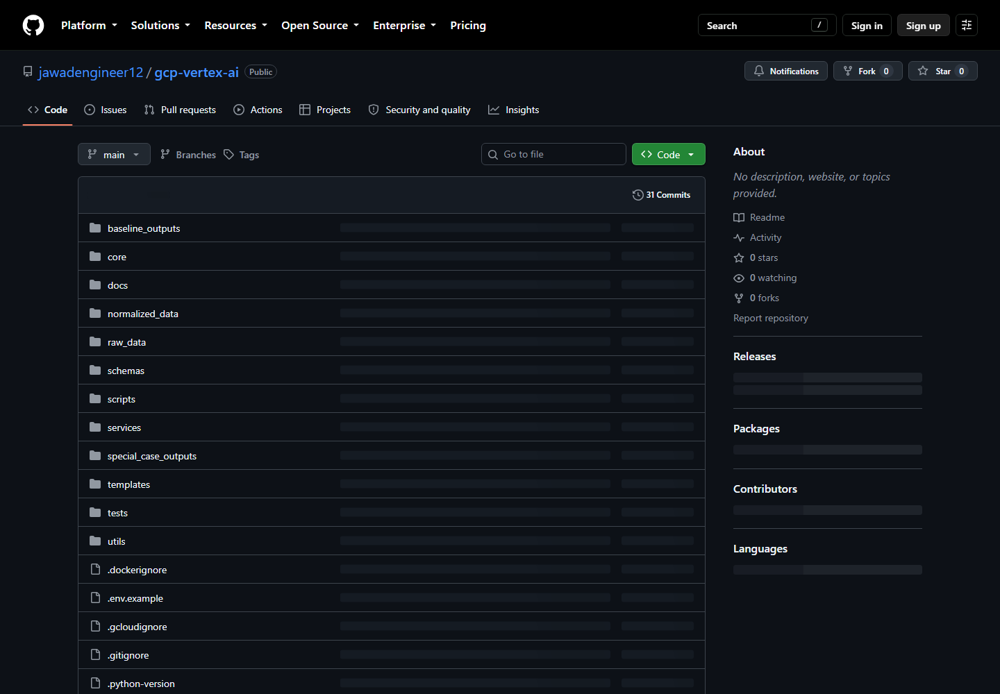
A branch is a named Git line of work used to isolate and review a change.
git switch main git pull --ff-only git switch -c feature/add-layout-example
Success: git branch --show-current prints the new branch.
Work only on the focused branch. Before committing, use git status --short to distinguish intended files from local archives, generated output, credentials, or unrelated user changes. A branch is not delivered merely because it exists locally; it must be pushed and reviewed or merged according to the team process.
| Item | Verified value |
|---|---|
| Project | angular-lambda-421320 |
| Region/service | us-central1 / layout-test-api |
| Runtime identity | vertex-layout-dev-sa@angular-lambda-421320.iam.gserviceaccount.com |
| Inbound key | Secret Manager layout-api-key; value never documented. |
| Publisher key | Separate Secret Manager publisher-api-key. |
Run in Windows PowerShell:
gcloud.cmd auth login gcloud.cmd config set project angular-lambda-421320 gcloud.cmd auth application-default login gcloud.cmd config get-value project
Success: the last command prints the project and gcloud.cmd auth list --filter=status:ACTIVE shows the intended account. Local Python uses ADC; Cloud Run uses its service identity. If access fails, ask the project administrator. The repository verifies roles/aiplatform.user for model calls and Secret Manager accessor for mapped runtime secrets; organization-specific deployer roles were not fully enumerated.
| Actor | Minimum responsibility | Verification |
|---|---|---|
| Local developer | Clone or pull the repository, create ADC, call Vertex in the approved project | gcloud auth list, project check, and a non-publishing generation |
| Cloud Run deployer | Build source, deploy revisions, update traffic, and read logs | Zero-traffic deployment and service description succeed |
| Runtime service account | Call Vertex and access only mapped secrets or approved GCS objects | Revision configuration shows the expected identity and the application completes a request |
| Secret administrator | Create or rotate secret versions without exposing values | Secret metadata and numeric version mapping are correct |
The exact human IAM roles depend on the client organization. Typical permissions may be delivered through custom roles or groups, so this manual does not invent role bindings. Ask the project administrator for least-privilege access if any verification command returns Permission Denied.
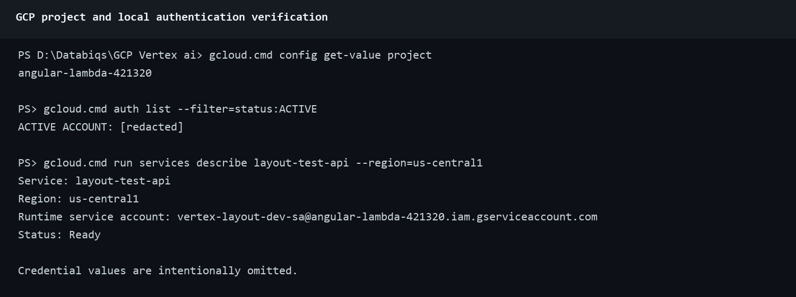
| Path | Purpose |
|---|---|
core/ | Configuration, logging, Vertex client. |
services/ | Primary application implementation. |
schemas/ | Strict Pydantic layout contract. |
templates/ | Four template definitions. |
raw_data/ | Training workbook, font list, source/reference data. |
normalized_data/layout_prompt_library_updated.json | Normal retrieval corpus (32 verified examples). |
normalized_data/vertex_index_data.json | Checked-in vectors (32 × 768 verified). |
normalized_data/special_case_library.json | Three whole-project relationship cases. |
scripts/ | Import, normalization, embedding, retrieval, and index utilities. |
tests/ | 58 verified tests after the focused retry change. |
baseline_outputs/ | Four checked-in normal JSON baselines. |
special_case_outputs/ | Three checked-in special-case JSON outputs. |
.gitignore and .gcloudignore serve different purposes. Git exclusions prevent local credentials, environments, logs, and generated files from entering source control. Cloud build exclusions keep unnecessary or sensitive files out of the deployment archive. The current Cloud Run source upload excludes .git, environment files, secret directories, key files, virtual environments, caches, logs, generated outputs, documentation, tests, most raw data, archives, and alternate vector-index files. It explicitly retains raw_data/Font List.csv and the configured normalized_data/vertex_index_data.json.
Checked-in items can still be excluded from the Cloud Run archive. For example, the tracked training workbook remains available to developers but is not required by the API container. Verify exclusions with gcloud meta list-files-for-upload before a release. Stop if it prints a credential, .env, private key, or unexpected archive.
GCS_BUCKET controls optional runtime output only.Start: PowerShell in the repository root.
python -m venv .venv .\.venv\Scripts\Activate.ps1 python --version python -c "import sys; print(sys.executable)"
Success: prompt normally shows (.venv), Python is 3.12+, and executable is under .venv\Scripts. If activation is blocked, use .\.venv\Scripts\python.exe explicitly or follow administrator policy; do not weaken machine-wide security settings.
Activation applies only to the current terminal. Open a new terminal only when a procedure explicitly calls for another process, such as starting the API and Streamlit separately. Activate the environment in each terminal, or prefix commands with uv run. Do not run maintenance scripts from scripts/; remain at the repository root so relative paths resolve correctly.
uv sync --frozen uv lock --check
Success: both exit 0. The XLSX importer uses pandas and requires an Excel engine available in the environment. Alternative: python -m pip install -e .; prefer the lockfile for reproducible handoff work. If pandas reports a missing openpyxl engine, install it in the active environment before running the importer; it is not declared directly by this baseline.
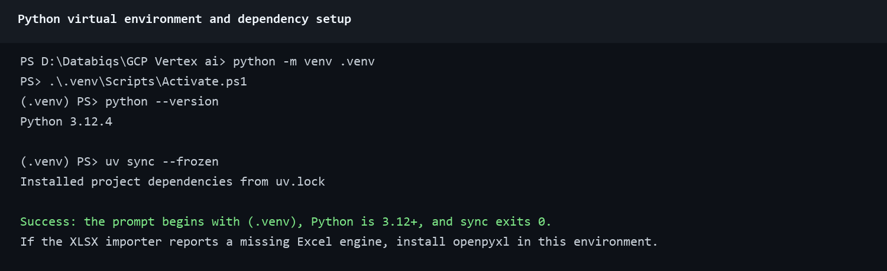
Copy-Item .env.example .env
Set at least GOOGLE_CLOUD_PROJECT=angular-lambda-421320 and GOOGLE_CLOUD_LOCATION=us-central1. Never commit .env.
| Key | Behavior/default |
|---|---|
PROMPT_LIBRARY_PATH | normalized_data/layout_prompt_library_updated.json |
SPECIAL_CASE_LIBRARY_PATH | normalized_data/special_case_library.json |
EXCEL_FILE_PATH | raw_data/trainingData_Local.xlsx |
VERTEX_INDEX_DATA_PATH | normalized_data/vertex_index_data.json |
FONT_LIST_PATH | raw_data/Font List.csv |
OUTPUT_FILE | outputs/generated_layout.json |
LOCAL_OUTPUT | Default true. |
GCS_BUCKET/GCS_OBJECT_NAME | Optional GCS destination. |
LAYOUT_API_KEY/LAYOUT_API_URL | Inbound API secret and Streamlit target. |
PUBLISHER_API_URL/PUBLISHER_API_KEY | Both required for explicit publisher handoff. |
ENABLE_RUN_TRACE | Default true locally; traces under outputs/run_traces. |
MAX_RETRIES | Default 3 generation attempts. |
Configuration precedence: shell environment variables override values loaded from .env. Cloud Run uses revision environment variables and Secret Manager mappings rather than the developer's local file. When troubleshooting, verify the environment where the failing process actually runs.
| Configuration type | Local development | Cloud Run |
|---|---|---|
| GCP identity | Application Default Credentials created by gcloud auth application-default login | Attached service account |
| Non-secret settings | .env or current PowerShell session | Revision environment variables |
| Inbound and publisher keys | Current session or uncommitted .env | Pinned Secret Manager versions |
| Output files | Repository-relative local path or approved GCS bucket | Ephemeral container file system or approved GCS bucket |
python -m unittest tests.test_layout_pipeline.LocalVectorStoreTests python -m unittest discover tests python tests/validate_prompt_library.py
Verified: 3 vector tests pass; full suite reports 58 tests OK; prompt validation reports 32 examples and 108 Article assets.
python main.py
Select a template, enter a prompt, answer requested fields, and wait. Success: Validated JSON saved (local): ... and the configured output exists. Failure after all retries exits 1 and prints validation details; inspect logs/pipeline.log. Publishing is opt-in only:
python main.py --publish
--publish only when a real external job is authorized.Terminal 1:
$env:LAYOUT_API_KEY="replace-with-a-long-random-local-value" $env:ENABLE_RUN_TRACE="false" uv run uvicorn api:app --host 0.0.0.0 --port 8080 --workers 1
Success: Uvicorn listens and Invoke-RestMethod http://localhost:8080/health returns {"status":"ok"}. Protected routes without the key should return 401.
Fully resolved request:
$headers=@{"x-api-key"=$env:LAYOUT_API_KEY}
$body=@{request_id=$null;prompt="Create a one-page article titled Service Verification";template_id="magazine_article";answers=@{article_title="Service Verification";author_name="Test Operator";hero_image_url=$null};publish=$false}|ConvertTo-Json -Depth 5
Invoke-RestMethod http://localhost:8080/v1/layouts -Method Post -Headers $headers -ContentType application/json -Body $body
Success: HTTP 200, status=completed, non-empty layout, and publisher=null. HTTP 200 needs_input is normal: resend the original prompt, returned request ID, and all answers. The API stores no session.
| HTTP result | Meaning | Operator action |
|---|---|---|
200 needs_input | The request is valid but required template fields are unresolved | Enter the fields and select Submit details; the Streamlit client resubmits the same request ID |
200 completed | Generation and validation passed | Inspect or download the layout; confirm publisher is null when publishing was disabled |
502 generation_failed, retryable=true | Generation exhausted its configured validation attempts | The Layout Generator shows Continue; selecting it starts a fresh request with the saved prompt, template, answers, and publish choice |
502 publish_failed | Validated layout exists but outbound handoff failed | Preserve the layout and request ID; check publisher state before retrying because a duplicate job is possible |
| 401 | Inbound API key missing or incorrect | Load the current secret without printing it |
| 422 | Request body, template, answer, or URL violates the API contract | Read the structured detail and correct the request |
| 503 | Server or publisher configuration is unavailable | Correct configuration; the retry Continue control is not shown for this response |
Terminal 2:
$env:LAYOUT_API_URL="http://localhost:8080" uv run streamlit run streamlit_app.py
Open http://localhost:8501, enter the API URL and same password-masked key, select Connect, choose a template, enter a prompt, keep Publish off, and submit. Success: Connected, four templates, “Layout generated successfully. It was not published.”, timings, validated JSON, and Download JSON.
needs_input. The interface displays A few more details. This is expected, not an error.Success: generation begins using the same request ID and accumulated answers. If submission returns 422, inspect the answer type and require HTTPS for image URLs.
status=generation_failed, the failed request ID, and retryable=true.request_id=null. The API creates a fresh request ID and runs the complete pipeline again.Success: Continue is absent before a retryable generation failure; it appears after the structured 502 response; the fresh request completes; the retry panel disappears; validated JSON and Download JSON are available. Closing or refreshing the Streamlit page may discard the locally retained input. Publisher failures do not show Continue because blind resubmission could create a duplicate external job.
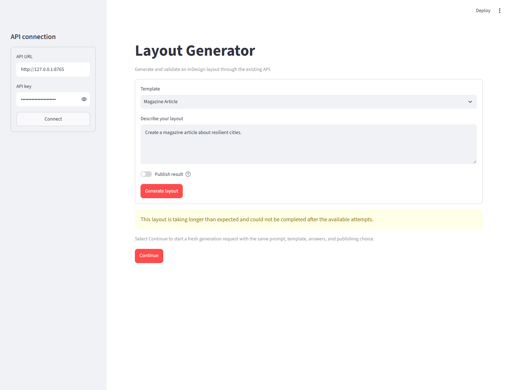
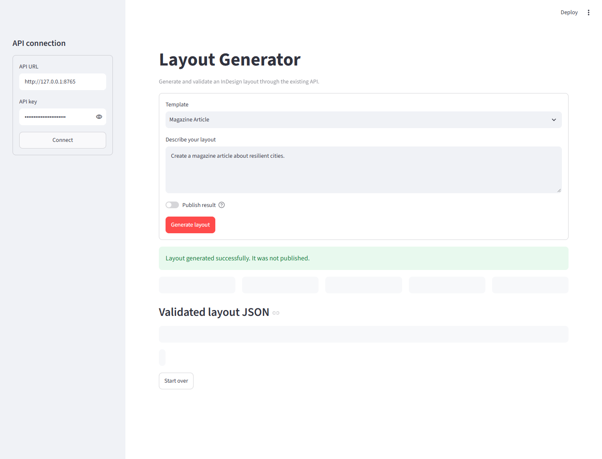
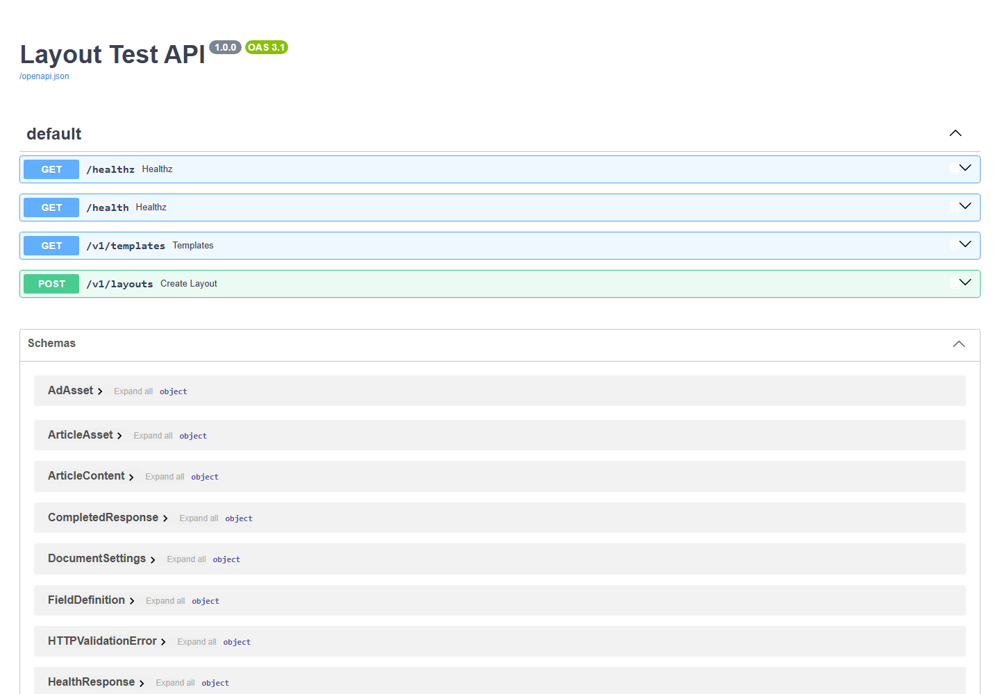
The source of truth for the four templates (magazine_article, editorial_page, cover_page, advertisement) is templates/*.json and protected GET /v1/templates. Deterministic layout planning may add prompt-specific image requirements.
A special case is a whole layout whose meaning depends on relationships: same-page threaded text, cross-page threaded text, or cross-page image spread. Source: normalized_data/special_case_library.json; outputs: special_case_outputs/; tests: tests/test_special_cases/.
Validation covers strict schema/types, page indexes, safe margins/bleed, approved fonts, Article overlap, threading links and autoFit, image spreads, page counts, and explicit position/size/column constraints.
python -c "import json; from pathlib import Path; from schemas.layout_schema import LayoutProject; p=Path('baseline_outputs/normal_cover.json'); LayoutProject.model_validate(json.loads(p.read_text(encoding='utf-8'))); print('VALID:',p)"
Success: prints VALID and exits 0. This checks schema; runtime ValidationService additionally applies layout rules. API status=completed and CLI validated-save text are the clearest end-to-end success criteria.
| Validation layer | What it proves | What failure looks like |
|---|---|---|
| Pydantic schema | Required fields, strict types, enum values, nested assets, and forbidden extra fields are correct | The command exits nonzero with the failing field path |
| Production validation service | Page bounds, margins, overlap, fonts, threading, spreads, page count, and prompt constraints are safe | The pipeline records validation errors and retries with cumulative feedback |
| API completion | The shared pipeline produced a schema-valid and rule-valid layout | Status is not completed, or the layout is missing |
| Baseline regression | Checked-in representative outputs remain accepted by the current schema and rules | A baseline or special output fails its test or validation command |
Do not treat valid JSON syntax alone as success. A file can parse with json.loads and still violate the converter schema, use an unapproved font, overlap Article frames, place an asset outside page bounds, or break a text thread.
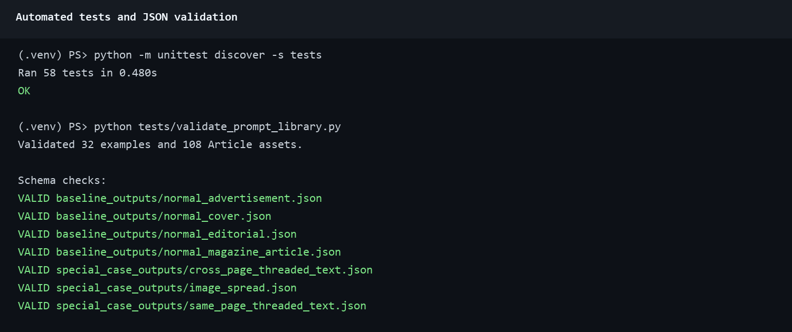
raw_data/new_examples.xlsx.Page Number, Generated Prompt (Input), and Expected JSON Object (Output). The expected value must parse as JSON and contain a non-empty assets array.$env:EXCEL_FILE_PATH="raw_data/new_examples.xlsx" python -m scripts.append_excel_to_prompt_library
Success: Appended count equals intended rows, no unexpected invalid/empty rows, and total rises by that count. The verified one-row exercise increased 32 to 33. File/path failures mean the environment variable or working directory is wrong; Excel-engine errors mean dependencies are stale.
The checked-in source workbook is raw_data/trainingData_Local.xlsx. Verification found 92 rows and these six columns:
| Column | Use |
|---|---|
Project Name | Human-readable source grouping |
Source JSON File | Reference to the originating expected JSON |
Source PDF File | Reference to the originating PDF when available |
Page Number | Source page or page context |
Generated Prompt (Input) | Retrieval intent stored as intent |
Expected JSON Object (Output) | JSON object stored as expected_output |
The importer requires the exact workbook headers, including the parenthetical Input and Output text. Do not use the full 92-row workbook as an append source unless every row is intentionally new. The script appends valid rows and does not deduplicate them.
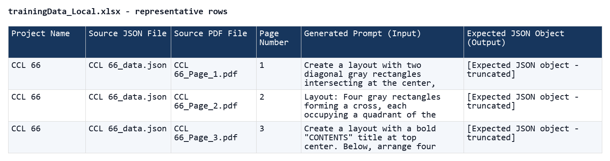
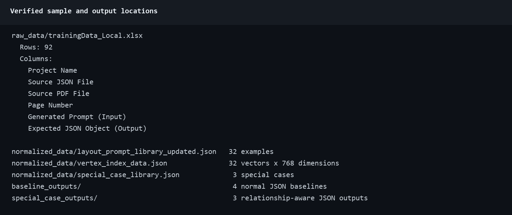
python tests/validate_prompt_library.py python -m scripts.normalize_prompt_library ` --source normalized_data/layout_prompt_library_updated.json ` --output normalized_data/layout_prompt_library_sanitized.json
Runtime retrieval already sanitizes selected examples. The normalization command creates a review artifact; it does not update configured vectors unless configuration is deliberately changed.
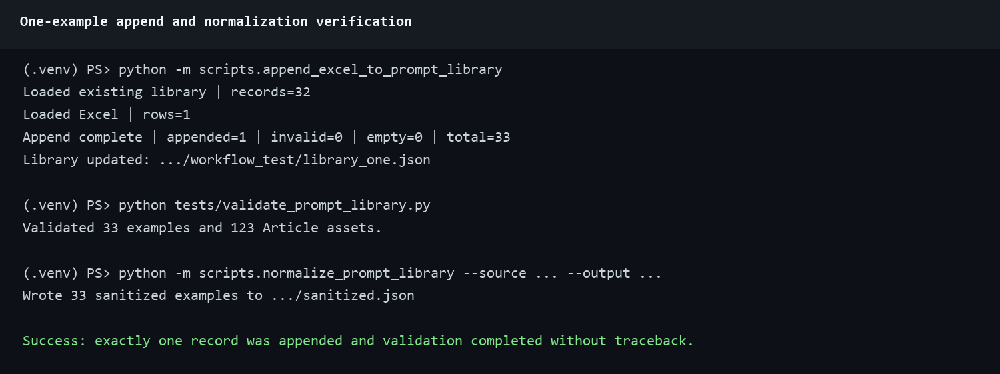
python -m scripts.prepare_vertex_vector_data python -m unittest tests.test_layout_pipeline.LocalVectorStoreTests
The first command is a paid Vertex text-embedding-004 call over the full configured library. It rewrites VERTEX_INDEX_DATA_PATH. Success: vector count equals library count, command prints Success, and 3 alignment/dimension tests pass. Commit the prompt library and vector file together.
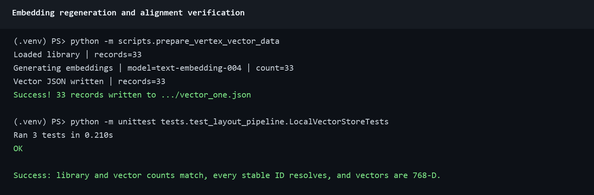
python -m scripts.normalize_special_case_library ` --source path/to/special_cases_source.json ` --output normalized_data/special_case_library.candidate.json
normalized_data/special_case_library.json.python -m unittest tests.test_special_cases.test_special_cases python -m unittest discover tests
Success: both end in OK. Special-case changes do not require normal-library embeddings unless the normal prompt library also changed.
The baseline repository has no demo_readiness_matrix or demo_generation_matrix module. Do not document or run those names on this branch. Use the checked-in deterministic suites first:
python -m unittest tests.test_special_cases.test_special_cases python -m unittest discover -s tests
Success: the special-case suite and full suite report OK. For a live representative generation, run python main.py, choose the relevant template, use a reviewed prompt, and keep publishing disabled. A live success requires the validated-save message and a saved JSON that passes the Section 6 schema check. Vertex/Gemini calls may cost money and vary between runs.
uv lock --check python -m unittest discover tests python tests/validate_prompt_library.py python -m unittest tests.test_layout_pipeline.LocalVectorStoreTests git diff --check
LOCAL_OUTPUT=true OUTPUT_FILE=outputs/generated_layout.json
The CLI writes validated JSON. outputs/ and traces are excluded from Git.
Local output is the safest development default. The API returns the layout in its response and does not use OUTPUT_FILE as a persistent API store. Cloud Run container storage is ephemeral, so use GCS or the response body when an artifact must survive a revision restart.
LOCAL_OUTPUT=false GCS_BUCKET=approved-bucket-name GCS_OBJECT_NAME=layouts/generated_layout.json
Success: CLI prints Validated JSON saved (gcs): gs://.... On failure check bucket, project, IAM, and object path. This is unrelated to checked-in baseline/special output folders.
Publisher handoff is the optional outbound POST to the external queue configured by PUBLISHER_API_URL. OutputService wraps validated JSON as var documentData=<json>; in the publisher envelope. The repository does not include the external dashboard, job polling, or PDF retrieval workflow.
PUBLISHER_API_URL=https://approved-publisher-host/path PUBLISHER_API_KEY=[secure value; never committed] PUBLISHER_CREATED_BY=approved-operator-identity PUBLISHER_PROJECT=approved-project-label
CLI requires --publish; API requires "publish":true. Keep false for smoke tests. Publisher failure returns 502 with status=publish_failed and preserves the validated layout.
A publisher smoke test is not equivalent to generation verification. It creates an outbound request that may create a real queued job. Before enabling it, identify the approved publisher environment, expected created-by/project metadata, who will confirm the queue entry, and how duplicate submissions are handled. If the API reports publish_failed, do not blindly resubmit because the remote system may have accepted the first request before the response failed.
git rev-parse HEAD.git status --short. Do not deploy an uncommitted working tree..gcloudignore excludes secrets, .env, keys, archives, venv, logs, outputs, docs/tests, and raw data except font list.git diff --name-status 3ceb766..HEAD. For this fix, runtime changes must be limited to api.py, streamlit_app.py, and their focused tests.$PROJECT_ID="angular-lambda-421320" $REGION="us-central1" $SERVICE="layout-test-api" $SUFFIX="candidate-YYYYMMDD" gcloud.cmd run deploy $SERVICE --source . ` --project=$PROJECT_ID --region=$REGION ` --revision-suffix=$SUFFIX --tag=$SUFFIX --no-traffic ` --quiet
Success: build SUCCESS, revision Ready, candidate URL printed, and stable traffic remains unchanged. Updating the existing service inherits configuration. For a new service/project, follow GCP_SETUP.md for APIs, runtime identity, pinned secrets, CPU/memory/concurrency/timeout/scale.
/health without key: 200 and status ok. Use this path for external Cloud Run checks./v1/templates with key from Secret Manager: 200 and four templates.publish=false: 200, completed, non-empty validated layout, publisher null.Cloud Run health-path note: the application defines both /health and /healthz, and both pass locally. In the verified Cloud Run environment, Google Front End returned its own HTML 404 for the exact external /healthz path while /health, /docs, and /openapi.json reached the application. No /healthz request appeared in container logs. Use /health as the documented external probe.
gcloud.cmd run services update-traffic layout-test-api ` --project=angular-lambda-421320 --region=us-central1 ` --to-revisions=layout-test-api-$SUFFIX=100
Repeat health, templates, and publish=false generation on the stable URL. Record revision, request ID, timings, and rollback target.
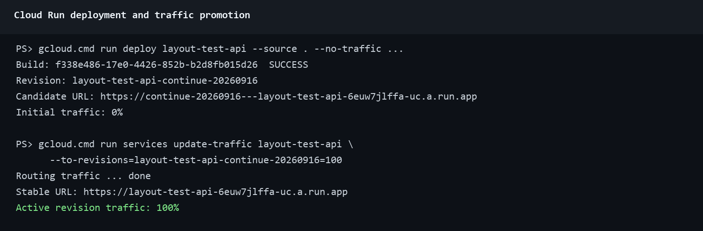
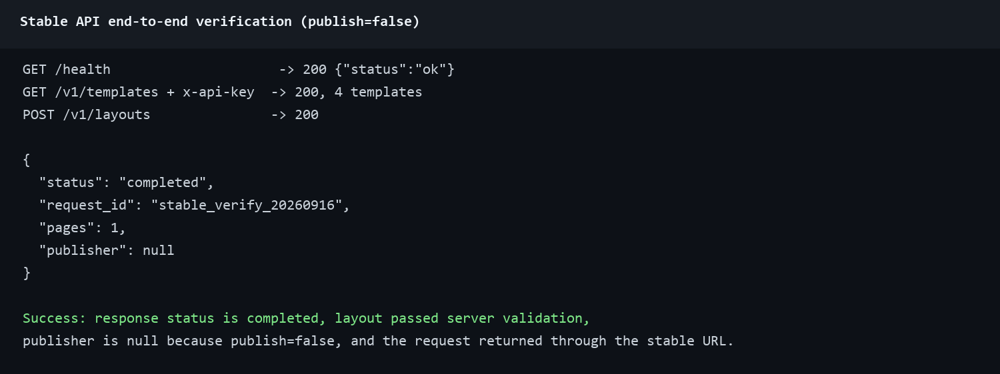
Cloud Run request logs contained three representative 502 responses on 28 August 2026 against layout-test-api-constraints-20260824, after 98-251 seconds. Request req_6d1f20f4077949b392a61a2fb541a3c7 logged three Gemini generations, three validation retries, then pipeline failed retries=2. No publisher stage ran. The reported failures were therefore stochastic Gemini JSON/schema/geometry failures before publisher handoff, not a Cloud Run network gateway fault.
The approved production baseline was revision layout-test-api-constraints-20260824, verified against Git commit 3ceb766. A later, broader revision was temporarily promoted during documentation work; it was returned to 0% and the approved baseline was restored to 100% before this focused fix was prepared.
3ceb766 baseline.status=generation_failed, retryable=true, the request ID, and the error description.needs_input, then a retryable 502, then HTTP 200 completed; it asserted that the failed request carried all answers and the Continue request carried the same answers with request_id=null.git diff --name-only 3ceb766 that no semantic-planning, generation, retrieval, validation, dependency, Docker, or runtime-configuration implementation was added.Status: the requested Continue recovery is implemented, verified locally, deployed as layout-test-api-continue-20260916, and receiving 100% traffic. Candidate and stable checks passed: health 200, structured generation-failure schema present, four templates, and a real publish=false generation completed with one validated page and publisher=null. The rollback target is layout-test-api-constraints-20260824.
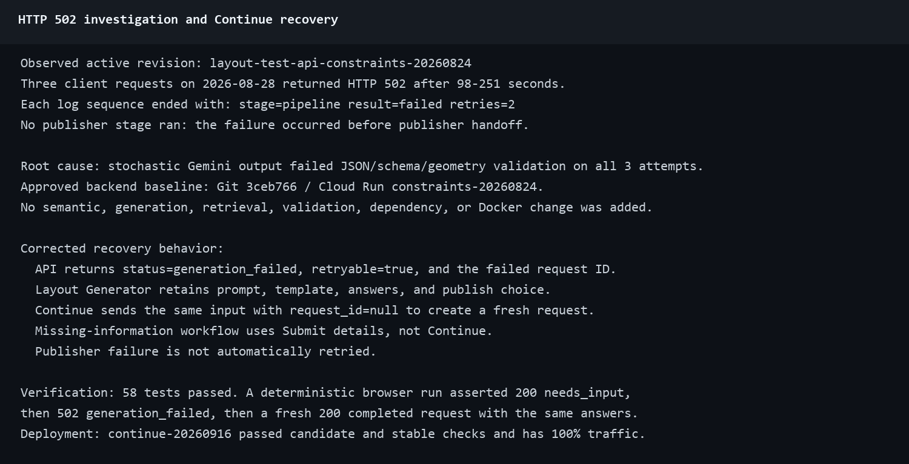
| Symptom | Action |
|---|---|
Google HTML 404 for /healthz with no request log | Use /health for the external Cloud Run probe; verify /docs or /openapi.json if routing is still uncertain. |
| Application JSON 404 | Verify the requested application path against /openapi.json. |
| 401 | Verify x-api-key, secure local variable, and active secret mapping. |
| 422 | Read detail: strict type/extra field/unknown template or answer/unsafe image URL. |
502 generation_failed | Record the failed request ID. In Layout Generator, select Continue once to create a fresh request with the retained input. If it fails repeatedly, stop and inspect logs rather than looping indefinitely. |
| 503 | Verify revision environment variables, secret mappings, IAM, publisher configuration, and Vertex availability. Correct configuration before retrying. |
502 publish_failed | Preserve layout/request ID; do not blindly retry because the queue may have accepted it. |
| Long request | Check the 900-second client/service timeout and filter logs by request ID to identify the slow stage. |
gcloud.cmd logging read ` 'resource.type="cloud_run_revision" AND resource.labels.service_name="layout-test-api" AND jsonPayload.request_id="<REQUEST_ID>"' ` --project=angular-lambda-421320 --limit=50 ` --format='table(timestamp,resource.labels.revision_name,jsonPayload.stage,jsonPayload.result,jsonPayload.retries,jsonPayload.duration_ms)'
publish=false until a real publisher job is authorized.git clone https://github.com/jawadengineer12/gcp-vertex-ai.git cd gcp-vertex-ai git switch -c exercise/add-one-example
Success: expected files exist and current branch matches.
python -m venv .venv .\.venv\Scripts\Activate.ps1 uv sync --frozen gcloud.cmd auth application-default login gcloud.cmd config set project angular-lambda-421320
Success: venv Python is active, sync exits 0, project is correct.
Create raw_data/exercise_one_example.xlsx with one valid row and exact required columns.
$env:EXCEL_FILE_PATH="raw_data/exercise_one_example.xlsx" python -m scripts.append_excel_to_prompt_library
Success: appended 1, invalid 0, empty 0, total +1. Stop if different.
python tests/validate_prompt_library.py python -m scripts.normalize_prompt_library --source normalized_data/layout_prompt_library_updated.json --output normalized_data/layout_prompt_library_sanitized.json
Success: new total validates and same number is normalized; review Git diff.
python -m scripts.prepare_vertex_vector_data python -m unittest tests.test_layout_pipeline.LocalVectorStoreTests
Success: vector count equals corpus, 3 tests OK.
python -m unittest discover -s tests python tests/validate_prompt_library.py git diff --check
Success: 58 or current higher count OK, prompt validation passes, no diff errors.
python main.py
Use relevant template, representative prompt, no --publish. Success: validated save message; run Section 6 direct schema check on saved file and require exit 0.
$SUFFIX="exercise-YYYYMMDD" gcloud.cmd run deploy layout-test-api --source . --project=angular-lambda-421320 --region=us-central1 --revision-suffix=$SUFFIX --tag=$SUFFIX --no-traffic --quiet
Success: build SUCCESS, revision Ready, tagged URL, 0% stable traffic.
/health and four templates.Success: Continue appears only for the retryable generation failure; the second request reuses all saved input, succeeds, and removes the retry panel.
git status --short git diff --check git add <intentional files> git commit -m "docs: complete Phase 1 handoff" git push -u origin <branch>
Commit the prompt library and vector file together with intentional code and tests. Do not add local archives, credentials, generated output, or unrelated user files. Record the source commit, revision, request ID, and rollback target. Stable promotion follows the normal team approval process.
| Gate | Required evidence |
|---|---|
| Source control | Focused branch pushed, working tree clean except known local-only files, source commit recorded |
| Baseline scope | git diff --name-status 3ceb766..HEAD contains only the approved retry behavior, focused tests, and documentation |
| Dependencies | uv lock --check succeeds |
| Unit tests | 58 or current higher count reports OK |
| Corpus | Prompt library validates and vector count matches corpus count |
| Representative generation | Reviewed prompt completes with publishing disabled and saved JSON passes schema validation |
| Retry recovery | Forced generation failure shows Continue only after the structured 5xx; the fresh request keeps all input and can complete |
| Candidate revision | Ready at zero stable traffic and tagged URL passes health, templates, generation, and retry recovery |
| Stable revision | 100% traffic, /health returns 200, API and Layout Generator pass |
| Security | No secret value appears in Git, screenshots, commands, logs, or the manual |
| Documentation | Manual, feedback matrix, screenshots, revision, and unresolved external checks agree |
| Task | Command |
|---|---|
| Venv | python -m venv .venv |
| Activate | .\.venv\Scripts\Activate.ps1 |
| Install | uv sync --frozen |
| ADC | gcloud.cmd auth application-default login |
| CLI | python main.py |
| API | uv run uvicorn api:app --host 0.0.0.0 --port 8080 --workers 1 |
| Streamlit | uv run streamlit run streamlit_app.py |
| Append | python -m scripts.append_excel_to_prompt_library |
| Normal normalize | python -m scripts.normalize_prompt_library --source ... --output ... |
| Special normalize | python -m scripts.normalize_special_case_library --source ... --output ... |
| Embeddings | python -m scripts.prepare_vertex_vector_data |
| Tests | python -m unittest discover -s tests |
| Special-case tests | python -m unittest tests.test_special_cases.test_special_cases |
| Live generation | python main.py with a reviewed prompt and no --publish |
| Term | Meaning |
|---|---|
| Baseline outputs | Checked-in normal regression JSON under baseline_outputs/. |
| Branch | Named Git line of work. |
| Deployment revision | Immutable Cloud Run version to which traffic can be routed. |
| Embedding | 768-dimensional retrieval vector; not a fine-tuned model. |
| GCS output | Optional validated-JSON upload to configured Cloud Storage. |
| Publisher handoff | Explicit outbound submission to external publisher queue. |
| Special case | Relationship-aware whole layout such as threaded frames or image spread. |
| Validation success | Schema and all production rules passed; API completed or CLI validated save. |
End of Phase 1 final manual. Phase 2 is intentionally excluded.